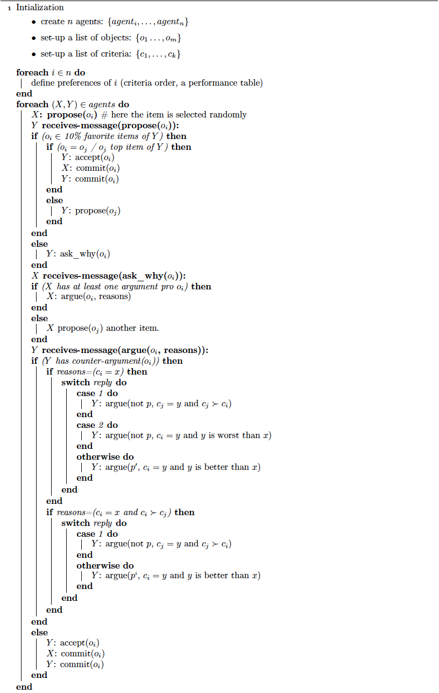
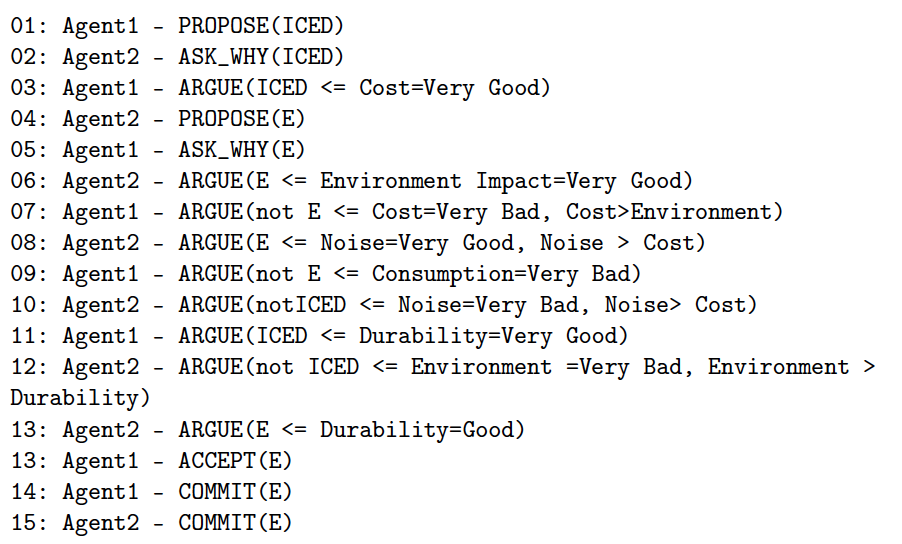

<!DOCTYPE html>

<html xmlns="http://www.w3.org/1999/xhtml">
  <head>
    <meta charset="utf-8" />
    <title>6.1 Negotiation protocols &#8212; MultiAgent Systems 2020-2021 documentation</title>
    <link rel="stylesheet" href="_static/classic.css" type="text/css" />
    <link rel="stylesheet" href="_static/pygments.css" type="text/css" />
    
    <script type="text/javascript" id="documentation_options" data-url_root="./" src="_static/documentation_options.js"></script>
    <script type="text/javascript" src="_static/jquery.js"></script>
    <script type="text/javascript" src="_static/underscore.js"></script>
    <script type="text/javascript" src="_static/doctools.js"></script>
    <script type="text/javascript" src="_static/language_data.js"></script>
    <script async="async" type="text/javascript" src="https://cdnjs.cloudflare.com/ajax/libs/mathjax/2.7.5/latest.js?config=TeX-AMS-MML_HTMLorMML"></script>
    
    <link rel="index" title="Index" href="genindex.html" />
    <link rel="search" title="Search" href="search.html" />
    <link rel="prev" title="6. Argumentation-based negotiation (Cont.)" href="cours-6.html" /> 
  </head><body>
    <div class="related" role="navigation" aria-label="related navigation">
      <h3>Navigation</h3>
      <ul>
        <li class="right" style="margin-right: 10px">
          <a href="genindex.html" title="General Index"
             accesskey="I">index</a></li>
        <li class="right" >
          <a href="cours-6.html" title="6. Argumentation-based negotiation (Cont.)"
             accesskey="P">previous</a> |</li>
        <li class="nav-item nav-item-0"><a href="index.html">MultiAgent Systems 2020-2021 documentation</a> &#187;</li> 
      </ul>
    </div>  

    <div class="document">
      <div class="documentwrapper">
        <div class="bodywrapper">
          <div class="body" role="main">
            
  <div class="section" id="negotiation-protocols">
<h1>6.1 Negotiation protocols<a class="headerlink" href="#negotiation-protocols" title="Permalink to this headline">¶</a></h1>
<p>The other rules that form the negotiation protocol may address the follwoing issues:</p>
<ul class="simple">
<li><p>rules for admission, which specify when an agent can participate in a negotiation dia-</p></li>
</ul>
<p>logue and under what conditions;
- termination rules, which specify when an encounter must end (e.g., if one agent utters
an acceptance locution);
- rules for proposal validity, which specify when a proposal is compliant with some con-
ditions (e.g., an agent may not be allowed to make a proposal that has already been
rejected);
- rules for outcome determination, which specify the outcome of the interaction; in
argumentation-based frameworks, these rules might enforce some outcome based on
the underlying theory of argumentation (e.g., if an agent cannot construct an argument
against a request, it accepts it [Parsons et al., 1998]);
- commitment rules</p>
<div class="section" id="an-example-of-a-negotiation-protocol">
<h2>1. An example of a negotiation protocol<a class="headerlink" href="#an-example-of-a-negotiation-protocol" title="Permalink to this headline">¶</a></h2>
<p>We are at the end of this practical work.  The diffrent questions and function implemented till now will help you to run (very soon :-) )  a negotiation between two agents.
Before to push the run button, you need to check that you have implemented all the necessary elements. For this, the following algorithm synthetises the conditions and the rules for the different moves during and interaction.</p>
<a class="reference internal image-reference" href="_images/algo.png"></a>
<p>This algorithm is represented by the following transition state diagram and a possible output (interaction) is depicted in the figure.</p>
<a class="reference internal image-reference" href="_images/nego.png"></a>
<a class="reference internal image-reference" href="_images/ex_nego.png"></a>
<p>For recall, the different perfomatives used in the algorithm are described in what follows.</p>
<p>1- PROPOSE(item): an agent sends this message after:</p>
<ul class="simple">
<li><p>either by selecting randomly an item, or selecting the most prefered item. It means you need to calculate the global score of each item and to compare them. Actually, if you follow correctly the different steps, this is was done in  question #2 of “Testing your Prefrence Class”.</p></li>
<li><p>generating the different arguments pro the item (Question 5 in “Generating Arguments”).</p></li>
</ul>
<p>2- ACCEPT(item): an agent sends this message if:</p>
<p>3- ARGUE(ITEM, REASONS):  an agent send this message after:</p>
</div>
<div class="section" id="questions">
<h2>2. Questions<a class="headerlink" href="#questions" title="Permalink to this headline">¶</a></h2>
<p>1- Read carefully the algorithm and update your implementation (when it is necessary) that it corresponds to the described functioning. Again this is just an example and you can choose different stratgies/conditions. Feel free to make your own choices.</p>
<p>2- set-up a number of agents and lunch the negotiation processes between each pair of agents.</p>
<p>3- At the end of each negotiation:</p>
<ul class="simple">
<li><p>récupérer l’agent gagnant, c’est celui qui a parlé en dernier avant un ACCEPT ou le récupérer dans les arguments qui ont zéro contre-arguments dans la structure de données.</p></li>
<li><p>récupérer du coup l’item (ou les items) défendu par ces arguments</p></li>
<li><p>Faire une petie analyse pour chaque agent combien de negotiation il a gagné, quel item est le plus défendu, quel est le critère le plus mis en avant, et.</p></li>
</ul>
<p>4- à partir de <span class="math notranslate nohighlight">\(n&gt;4\)</span> construire le graphe d’arguments  (issus des différentes négotiations) et calculer l’ensemble des <strong>arguments acceptables</strong> selon une semantique de votre choix (cours: Semantic de Dung). Quelle conclusion peut on déduire</p>
<div class="admonition note">
<p class="admonition-title">Note</p>
<p>Question 4 is to be done only if you have managed to complete all the requested questions.</p>
</div>
</div>
</div>


          </div>
        </div>
      </div>
      <div class="sphinxsidebar" role="navigation" aria-label="main navigation">
        <div class="sphinxsidebarwrapper">
  <h3><a href="index.html">Table of Contents</a></h3>
  <ul>
<li><a class="reference internal" href="#">6.1 Negotiation protocols</a><ul>
<li><a class="reference internal" href="#an-example-of-a-negotiation-protocol">1. An example of a negotiation protocol</a></li>
<li><a class="reference internal" href="#questions">2. Questions</a></li>
</ul>
</li>
</ul>

  <h4>Previous topic</h4>
  <p class="topless"><a href="cours-6.html"
                        title="previous chapter">6. Argumentation-based negotiation (Cont.)</a></p>
  <div role="note" aria-label="source link">
    <h3>This Page</h3>
    <ul class="this-page-menu">
      <li><a href="_sources/part-9.rst.txt"
            rel="nofollow">Show Source</a></li>
    </ul>
   </div>
<div id="searchbox" style="display: none" role="search">
  <h3 id="searchlabel">Quick search</h3>
    <div class="searchformwrapper">
    <form class="search" action="search.html" method="get">
      <input type="text" name="q" aria-labelledby="searchlabel" />
      <input type="submit" value="Go" />
    </form>
    </div>
</div>
<script type="text/javascript">$('#searchbox').show(0);</script>
        </div>
      </div>
      <div class="clearer"></div>
    </div>
    <div class="related" role="navigation" aria-label="related navigation">
      <h3>Navigation</h3>
      <ul>
        <li class="right" style="margin-right: 10px">
          <a href="genindex.html" title="General Index"
             >index</a></li>
        <li class="right" >
          <a href="cours-6.html" title="6. Argumentation-based negotiation (Cont.)"
             >previous</a> |</li>
        <li class="nav-item nav-item-0"><a href="index.html">MultiAgent Systems 2020-2021 documentation</a> &#187;</li> 
      </ul>
    </div>
    <div class="footer" role="contentinfo">
        &#169; Copyright 2020, Emmanuel Hermellin, Wassila Ouerdane, Nicolas Sabouret.
      Created using <a href="http://sphinx-doc.org/">Sphinx</a> 2.2.0.
    </div>
  </body>
</html>